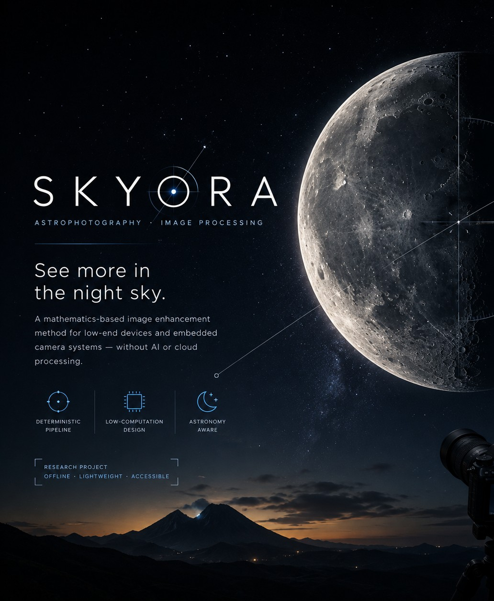
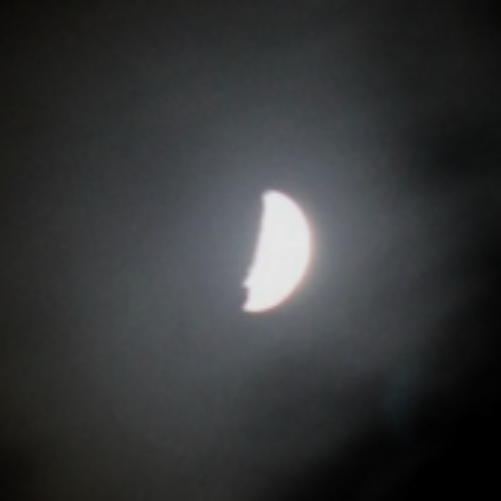
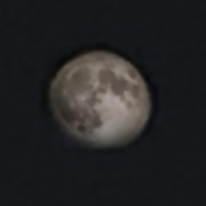
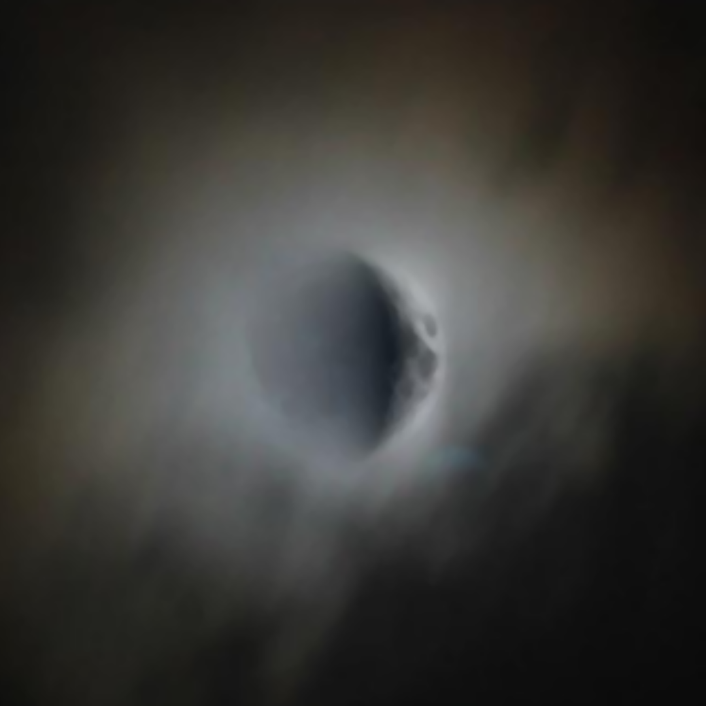
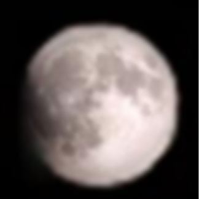
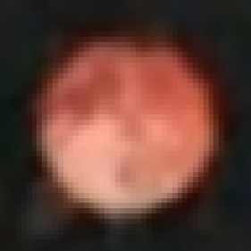
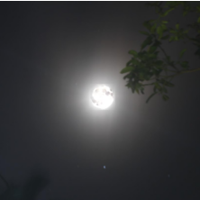

See more in the night sky.
Skyora is a mathematics-based astrophotography image-processing system designed to enhance lunar imagery on low-end devices and embedded camera systems — without artificial intelligence or cloud processing.

Computational imaging for imperfect cameras.
Useful astrophotography enhancement does not always require a large model or powerful machine.
Astrophotography quality is usually bound by optics, sensor quality, exposure, stability, and processing power — resources most amateur and embedded systems don't have in abundance.
Skyora approaches the problem differently, using deterministic mathematical and classical image-processing techniques instead of machine-learning inference.
Three deterministic capabilities.
Denoising & Enhancement
Skyora applies lightweight image-processing operations to suppress noise while preserving useful structure and edges.
- Bilateral filtering
- Gaussian smoothing
- Contrast / pixel transformations
- Classical image-processing techniques
Moon Fixer
Detects the lunar disc, calculates lunar parameters, selects a phase-appropriate template, adapts it, and integrates it into the captured scene — an image enhancement and compositing technique, not a restoration of lost detail.
- Lunar disc detection
- Phase-matched templating
- Scene-aware compositing
Astronomy Image Processing
Combines astronomical calculations with conventional computer vision to process lunar astrophotography in a fully offline workflow.
- Lunar ephemeris computation
- Conventional computer vision
- Fully offline execution
From indistinct to detailed.
A real Skyora processing example. Drag the divider to compare the original capture against the Skyora-enhanced output.


ORIGINAL CAPTURE SKYORAProcessing applied: lunar disc detection → phase-matched template adaptation → alpha-composited blending → bilateral denoising.
Real conditions, processed offline.





A deterministic image-processing pipeline.
Every stage runs on fixed rules and astronomical calculation — no inference, no training data, no cloud round-trip.
Mathematics behind the image.
Skyora does not rely on a machine-learning inference model. Candidate regions, lunar phase, and template selection are derived from closed-form calculations.
Circularity
Used to evaluate how closely a detected contour resembles a circular lunar disc.
Candidate Score
Combines circularity, brightness, and contour area when ranking candidate lunar regions.
Lunar Age
Determines the lunar age in days, used to select the phase-appropriate template.
A Mathematics-Based Astrophotography Image Enhancement Method for Low-End Devices and Embedded Camera Systems
Built by curiosity.
Hiruja Edurapola
Researcher · Developer · AstronomerHiruja Edurapola is an independent student researcher and software developer working at the intersection of astronomy, computational imaging, and software engineering. Skyora explores how mathematical and classical image-processing methods can make astrophotography more accessible on low-cost hardware.
Hiruja Studios
Creative technology and development studio focused on software, experiments, games, digital experiences and technology projects.
SJ Research Labs
Independent research initiative exploring science, technology, engineering and experimental projects.